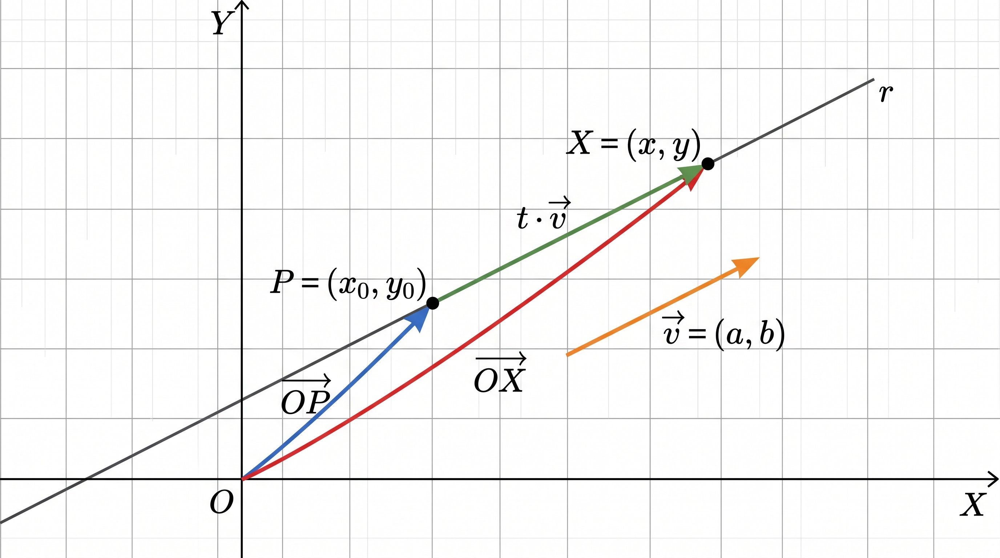

La ecuación de una recta es una expresión analítica que permite identificar todos los puntos de la recta y conocer sus coordenadas.
Vamos a determinar la ecuación de una recta, a partir de un punto, \(\mathrm{P}\), que pertenezca a ella y de un vector director, \(\vec{v}\), que esté en la dirección de la recta.
Verdadero o falso.
Manipula el applet de Geogebra e indica Verdadero o Falso, según corresponda:
00:00:
Definición. Ecuación de una recta.
Por dos puntos del plano pasa una y sólo una recta.
|
Por tanto, una recta queda determinada, o bien, : · Conocidos dos puntos pertenecientes a ella, o, · Conocidos un punto y un vector director de la misma. El vector director es cualquier vector que una dos puntos de dicha recta. |
| La ecuación de una recta es una expresión que nos permite calcular las coordenadas de cualquiera de sus puntos. |
Sea una recta r que tiene como vector director \(\vec{v}=(a,b)\) y pasa por un punto \(\mathrm{P}=(x_0,y_0)\).
Si \(\mathrm{X}=(x,y)\) es un punto cualquiera de la recta, este se obtendrá como suma del vector de posición del punto \(\mathrm{P}\), más un múltiplo del vector vector director de la recta, \(\vec{v}\).

Si expresamos ésto matemáticamente, tendremos una ecuación que se conoce con el nombre de Ecuación Vectorial de la recta:
\[\overrightarrow{\mathrm{OX}}= \overrightarrow{\mathrm{OP}}+t \cdot\vec{v}\]
\(t\) es un parámetro, que en otros materiales didácticos puedes encontrar también, comúnmente, con la letra \(\lambda\), depende del autor. Aquí se ha optado por la letra \(t\).
Los tipos de ecuaciones, así como las transformaciones que nos permiten pasar de una a otra se recogen en el siguiente apartado.
La Ecuación Vectorial es la ecuación desde la que partiremos para obtener el resto de tipos de ecuaciones con las que se puede expresar una recta.
Distintas maneras de expresar la ecuación de una recta.
Ecuación vectorial
Partimos de la ecuación vectorial, la cual expresamos en coordenadas:
\(\overrightarrow{\mathrm{OX}}= \overrightarrow{\mathrm{OP}}+t \cdot\vec{v}\)
| \[(x,y)=(x_0,y_0)+t\cdot (a,b)\] |
Ecuaciones paramétricas.
Separamos en dos ecuaciones, una para la componente \(x\) y otra para la componente \(y\), quedando:
| \(\begin{cases}x=x_0+t\cdot a \\ y=y_0+t\cdot b \end{cases}\) |
Ecuación continua.
3º) Despejamos \(t\) en ambas ecuaciones e igualamos:
| \(\dfrac{x-x_0}{a}=\dfrac{y-y_0}{b}\) |
Ecuación general.
4º) Realizamos los productos cruzados:
\(b \cdot (x-x_0)= a \cdot (y-y_0)\)
Operamos y pasamos todo al primer miembro:
\(bx-ay-bx_0+ay_0=0\)
Sustituyendo: \(\mathrm{A}=b\), \(\mathrm{B}=-a\) y \(\mathrm{C}=-bx_0+y_0\), obtenemos:
| \(\mathrm{A}x+\mathrm{B}y+\mathrm{C}=0\) |
Ecuación punto-pendiente.
Si en la ecuación continua multiplicamos e cruz. pasando las \(y\) hacia el primer miembro y las \(x\) hacia el segundo, obtenemos: \(y-y_0=\dfrac{b}{a}(x-x_0)\)
Observamos que: \(m=\dfrac{b}{a}=\text{tg}\alpha\) donde \(\alpha\) es el ángulo que la recta forma con el eje de abscisas y \(m\) la pendiente, inclinación de la recta.
| \(y-y_0=m \cdot (x-x_0)\) |
Ecuación explícita.
Finalmente, operando en la ecuación anterior:
\(y-y_0=mx -mx_0\), y llamando \(n=-mx_0\)
| \(y=mx+n\) |
Casos posibles para determinar la ecuación de una recta.
-
Caso 1. Conocemos un punto y su vector director, que indica la dirección de la misma.
-
Caso 2. Conocemos dos de sus puntos. Con estos puntos podemos formar su vector director y estaríamos en el Caso 1.
-
- Caso 2.1. Conocemos los dos puntos de corte, tanto con el eje \(\overrightarrow{\mathrm{OX}} \) como con el eje \(\overrightarrow{\mathrm{OY}} \) . Da igual qué puntos sean. En definitiva, conocemos dos puntos de ella, es decir, estaríamos en el Caso 2.
-
Caso 3. Conocemos un punto de ella y su pendiente, es decir, la inclinación de la recta con respecto al eje \(\overrightarrow{\mathrm{OX}} \) .
-
-
Caso 3.1. Conocemos su pendiente y el punto de corte con el eje OY. Al fin y al cabo, conocemos un punto y su pendiente luego, estamos en el Caso 3.
-
Ejemplo gráfico.
Completa.
Completa los huecos que faltan en las siguientes afirmaciones:
Únicamente, debes tener presente en (3) que al tener 2 puntos, en vez de 1 punto y 1 vector, debes "fabricarte" el vector y ya procedes de manera habitual, tal como se indica en el cuadro resumen.
Ejercicio.
Vamos a practicar con distintos casos:
(1) Obtén las ecuaciones paramétricas y continua de la recta \(r\) que pasa por \(P = (1,2)\) y su vector director es \(\vec{v} = (1,-1)\)
(2) Indica un punto de la recta \(r\) distinto de \(P\).
(3) ¿El punto \(R(2,0)\) pertenece a la recta \(r\)?